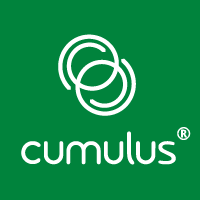
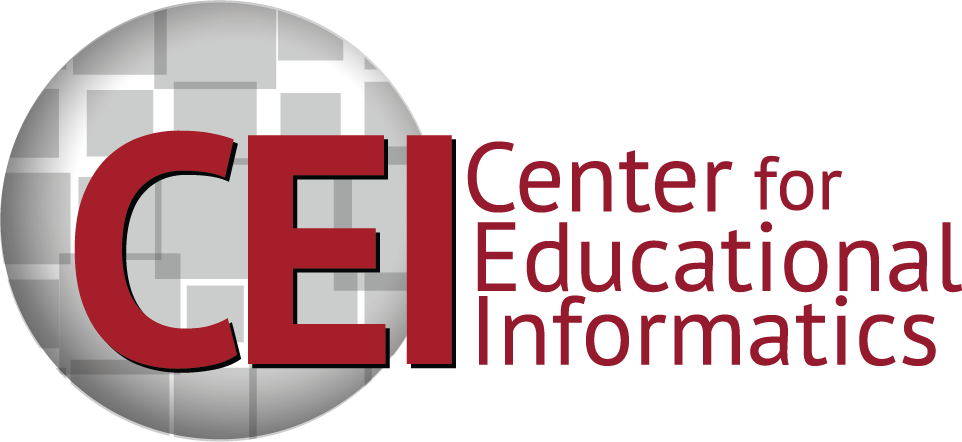

<div class="row">
  <div class="col-md-8 col-md-offset-2">
    <h2>Employment History</h2>

    <div class="panel panel-default">
      <div class="panel-heading">
        <h3 class="panel-title">Cumulus Networks <small>January 2015-present</small></h3>
      </div>
      <div class="panel-body">

        <div class="media">
          <div class="media-left">
            
          </div>
          <div class="media-body">
            <p>I'm currently working as a Customer Engineer in the Enablement team at
               <a href="http://cumulusnetworks.com">Cumulus Networks</a>, a networking
               startup based in Mountain View, CA. Cumulus Networks develops and licenses
               a version of Linux designed to run on white-box switches, making
               hardware accelerated switching accessible without having to learn a custom
               operating system. Because the interface is "just Linux", it's possible to
               leverage the same automation and monitoring tools used for managing Linux-based
               servers, unifying the system administration experience for the entire infrastructure.</p>
            <p>The Enablement team provides tools, documentation, education, and consulting
               based on this user story to help customers make the most out of Cumulus Linux.
               My current project is leading the development of the
               <a href="http://cumulusnetworks.com/get-started/test-drive-open-networking-in-our-remote-lab/">Workbench</a>,
               a sales and training tool which allows potential customers to reserve a set of
               switches running in our labs for up to a week to see how it works, run demos, and
               test proofs of concept before investing in hardware of their own.</p>
            <ul>
              <li>Developed and supported the Workbench, a distributed system built with
              <a href="https://python.org">Python</a>,
              <a href="https://flask.pocoo.org/">Flask</a>,
              <a href="https://javascript.com">Javascript</a>,
              <a href="https://jquery.com">JQuery</a>,
              <a href="https://getbootstrap.com/">Bootstrap</a>,
              <a href="https://linuxcontainers.org/">LXC</a>,
              <a href="https://rabbitmq.com">RabbitMQ</a>,
              <a href="https://redis.io">Redis</a>,
              and <a href="https://rethinkdb.com">RethinkDB</a>.
              </li>
              <li>Automated the deployment cycle for the Workbench using <a href="https://puppetlabs.com/">Puppet</a>
              and <a href="https://jenkins-ci.org/">Jenkins</a>.</li>
              <li>Deployed and maintained the Virtual Machines running in <a href="https://cloud.google.com/compute">Google Compute
              Engine</a> and the physical pods in our datacenter.</li>
              <li>Held regular stakeholders meetings to identify features needed in the field for the Workbench.</li>
            </ul>
          </div>
        </div>

      </div>
    </div>


    <div class="panel panel-default">
      <div class="panel-heading">
        <h3 class="panel-title">NC State Center for Educational Informatics <small>August 2012-December 2014</small></h3>
      </div>
      <div class="panel-body">

        <div class="media">
          <div class="media-left">
            
          </div>
          <div class="media-body">
            <p>Through most of graduate school, I did research in the field of
               Educational Data Mining as a Teaching &amp; Research Assistant
               working under
               <a href="http://www4.ncsu.edu/~tmbarnes/">Dr. Tiffany Barnes</a>
               and <a href="http://www4.ncsu.edu/~efg">Dr. Edward Gehringer</a>.
               Educational Data Mining is the application of data mining and
               machine learning techiques to associate data from educational
               environments such as classrooms and tutoring systems and
               with learning and engagement.</p>
            <p>While working in the CEI, I had the opportunity to engage in a
               teaching-intensive program, teaching classes for nearly two years.
               Teaching has tremendously improved my communication skills.
               Having to lecture twice a week has made me a much better public
               speaker, and holding office hours for my students has helped me
               listen to and troubleshoot their technical difficulties.</p>
            <ul>
              <li>Developed scripts in Python for the analysis of tutoring
                  system logs and student source code, and packaged data and
                  source code from research into <strong>replication
                  packages</strong> to facilitate reproduction of results by
                  other researchers.</li>
              <li>Acted as the lab system administrator, managing our research
                  server and writing Ajax scripts to collect data from web-based
                  tutoring systems.</li>
              <li>Taught undergraduate classes for two years. I was the lab
                  instructor for the junior-level <strong>Software
                  Engineering</strong> course that taught agile principles
                  through a semester-long web app development project, and
                  co-instructor for the sophomore-level <strong>C &amp; Software
                  Tools</strong> course that teaches the C programming language,
                  version control, debugging, and automation.</li>
              <li>Implemented the Github flow into my sophomore-level <strong>C
                  &amp; Software Tools</strong> course, and built an automated
                  grading system that utilize Jenkins continuous integration to
                  provide immediate feedback on homework grades to students and
                  instructors.</li>
              <li>Received numerous accolades for teaching, including the
                  <strong>Certificate of Accomplishment in Teaching</strong>, the
                  <strong>Preparing the Professoriate Fellowship</strong>, and nomination
                  for the <strong>Outstanding Teaching Assistant Award</strong> for both
                  years of my work - winning the award in the second year.</li>
              <li>Published <a href="http://educationaldatamining.org/EDM2014/uploads/procs2014/long%20papers/92_EDM-2014-Full.pdf">papers</a>
                  as well as a <a href="https://www.hastac.org/blogs/barrypeddycordiiiandelizabethapitts/2013/08/01/chapter-two-open-programming-open-learning">book
                  chapter</a> on my research through open access channels.</li>
            </ul>
          </div>
        </div>

      </div>
    </div>


    <div class="panel panel-default">
      <div class="panel-heading">
        <h3 class="panel-title">NC State Cyber Defense Lab <small>May 2011-August 2012</small></h3>
      </div>
      <div class="panel-body">

        <div class="media">
          <div class="media-left">
            
          </div>
          <div class="media-body">
            <p>After completing my Bachelor's Degree in Computer Science, I
               started graduate school in the <strong>Cyber Defense Lab</strong>
               working under <a href="http://discovery.csc.ncsu.edu">Dr. Peng Ning</a>.
               I did research on network security analytics focused on the
               relationships of services in distributed networks. This work
               was used as the basis for my Master's Degree, completed in May 2013.</p>
            <ul>
              <li>Implemented <a href="http://openbts.org">OpenBTS</a> on the
                  <a href="https://en.wikipedia.org/wiki/Universal_Software_Radio_Peripheral">USRP</a>
                  to simulate the <a href="https://en.wikipedia.org/wiki/IMSI-catcher">false
                  base station attack</a> in a lab environment.</li>
              <li>Developed a Python software package and library around
                  <a href="http://github.com/isharacomix/nsdminer"><em>NSDMiner</em></a>,
                  a non-intrusive algorithm for detecting network service
                  dependencies in distributed systems.</li>
              <li>Worked with the NC State University Office of Technology
                  Transfer to release the <em>NSDMiner</em> source code under an
                  open source license.</li>
              <li>Published and presented my work on <em>NSDMiner</em> at
                  <a href="https://www.usenix.org/system/files/conference/lisa12/lisa12-final-41.pdf">USENIX LISA 2012</a>,
                  an open-access conference.</li>
            </ul>
          </div>
        </div>

      </div>
    </div>


  </div>
</div>
